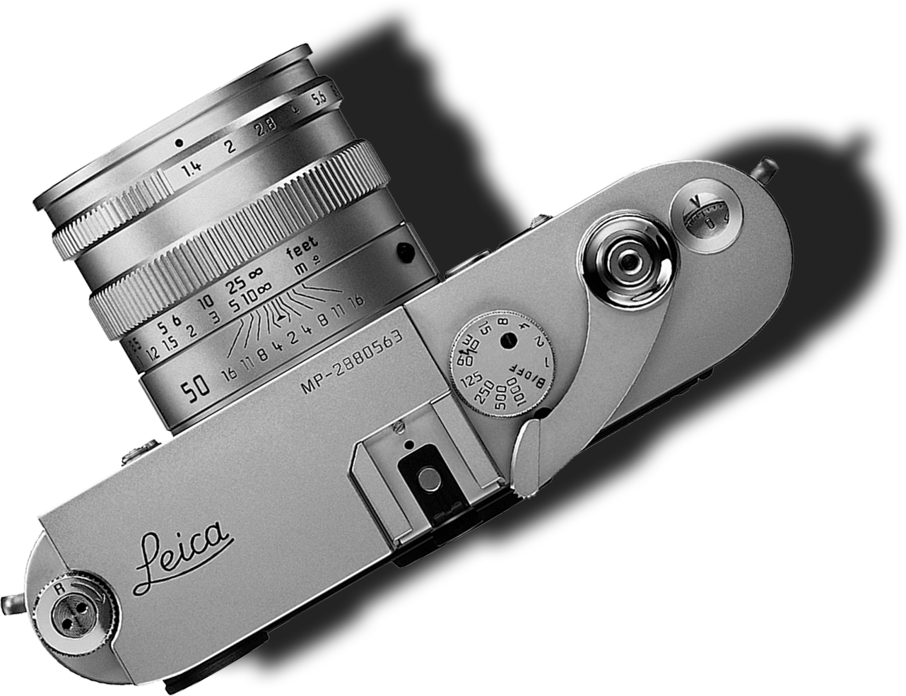
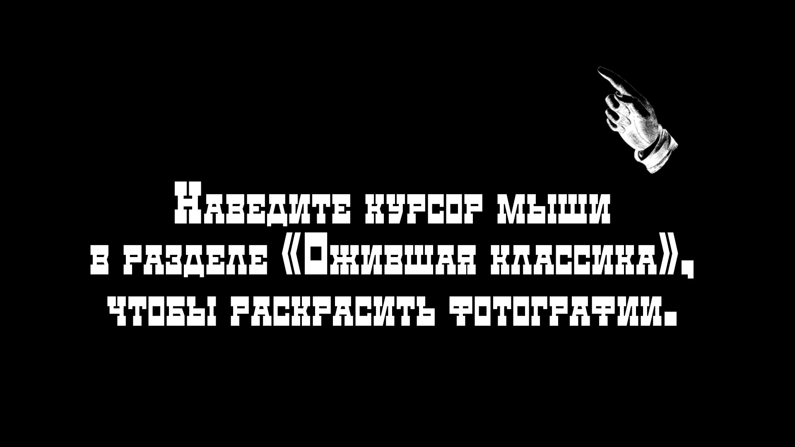

Образ Санкт-Петербурга
Деятели русской культуры
О разделе
Этот раздел содержит все фотографии, представленные на экспозиции в музее.
А также уникальную пост-обработку при помощи нейросетей.


Фёдор Шаляпин и Илья Репин
Feodor Chaliapin and Ilya Repin
Лев Толстой
Leo Tolstoy
Лев Толстой. Прогулка на любимом коне Демире
Riding his favorite horse, Demir
Семейный обед
Family dinner
Партия в шахматы с М. С. Сухотиным
A game of chess with M. Sukhotin
В рабочем кабинете
In the study
С сестрой Марией Николаевной, монахиней Шамординского женского монастыря
With sister Maria Nikolayevna, nun at the Shamordino Convent.
С дочерью Александрой
With his daughter Alexandra
Художник Илья Репин читает газетное сообщение о смерти Льва Толстого.
Слева писатель Корней Чуковский. Справа их жёны Наталья и Мария. Ноябрь 1910
Painter Ilya Repin reading a notice on Leo Tolstoy’s death in a newspaper.
Their wives to the right: Natalia and Maria. November 1910
И. Е. Репин в своём имении Куоккала. 1908
I. Repin at his Kuokkala mansion. 1908
Писатель Максим Горький, актриса Мария Андреева позируют Илье Репину. Куоккала. 18 августа 1904
Writer Maxim Gorky and actress Maria Andreyeva posing for Ilya Repin. Kuokkala. August 18, 1904
Илья Репин с семьёй
Ilya Repin with family
Банкир и предприниматель Е. Г. Шайкевич, критик В. В. Стасов, писатель А. М. Горький, И. Е.
Репин.
Куоккала. 18 августа 1904
Banker and entrepreneur E. Shaikevich, literary critic V. Stasov, writer A. Gorky, I. Repin.
Kuokkala. August 18, 1904
В. В. Стасов в рабочем кабинете. Начало 1900-х
V. Stasov in his study. Early 1900s
Музыкальный вечер у В. В. Стасова. Поёт Фёдор Шаляпин.
Среди гостей композиторы Александр Глазунов, Цезарь Кюи, Николай Римский-Корсаков, актриса Мария
Савина. 1904
A musical night at V. Stasov. Feodor Chaliapin singing.
Guests include composers Alexander Glazunov, César Cui, Nikolai Rimsky-Korsakov, actress Maria
Savina. 1904
Певец Фёдор Шаляпин. 1913
Singer Feodor Chaliapin. 1913
Фёдор Шаляпин с сыном Фёдором. 1911
Feodor Chaliapin with his son Feodor. 1911
Вперёд! Ф. Шаляпин. Март 1914
Onwards! F. Chaliapin. March 1914
Шаляпин на репетиции. 1913
Chaliapin rehearsing. 1913
Шаляпин на катке.
Chaliapin on a skating rink.
Художник Николай Рерих в своей мастерской. 1910-е
Painter Nicholas Roerich in his workshop. 1910s
Актриса Вера Комиссаржевская.
Actress Vera Komissarzhevskaya.
Балерина Тамара Карсавина.
Ballerina Tamara Karsavina
Скульптор А. М. Опекушин. 1908
Sculptor A. Opekushin. 1908
Писатель Аркадий Аверченко. 1913
Writer Arkady Averchenko. 1913
Поэт Сергей Городецкий
Poet Sergey Gorodetskiy
Историк, коллекционер Н. П. Лихачёв
Historian, collector N. Likhachev
Поэт Осип Мандельштам, писатель Корней Чуковский, художник Юрий Анненков, поэт Бенедикт Лившиц.
Август 1914
Poet Osip Mandelstam, writer Kornei Chukovsky, painter Yuri Annenkov, poet Benedikt Livshits.
August 1914
Философ, пропагандист марксизма Георгий Валентинович Плеханов. 1917
Philosopher, promoter of Marxism, Georgi Plekhanov. 1917
Николай II, императрицы Мария Фёдоровна и Александра Фёдоровна. Майский парад 1901 года
Nicholas II, Empresses Maria Feodorovna and Alexandra Feodorovna. May parade of 1901
Наводнение в Санкт-Петербурге 12 октября 1903.Возле Академии художеств
Flood in St. Petersburg. Near the Academy of Arts. October 12, 1903
Лев Толстой
Leo Tolstoy
Художник Исаак Бродский пишет портрет актёра Владимира Хенкина.
1913
Painter Isaac Brodsky painting a portrait of actor Vladimir Henkin.
1913
Балерина Тамара Карсавина.
Ballerina Tamara Karsavina
Император Николай II и цесаревич Алексей.
1913
Emperor Nicholas II and Tsesarevich Alexei.
1913
Императорская семья на Петровской набережной. Август 1912
Imperial family on Petrovskaya Embankment. August, 1912
Аэроплан, потерпевший аварию во время Второй авианедели.
The airplane that crashed during the Second Aviation Week. 1910
Лев Толстой. Прогулка на любимом коне Демире
Riding his favorite horse, Demir
Карл Булла. Автопортрет.
Karl Bullla autoportrait.
Велотрек в саду Буфф. 1904
Bicycle race track at the Buff garden. 1904
Тушение пожара в Апраксином дворе. 3 июля 1914
Fighting the Apraksin Yard fire. July 3, 1914
Банкир и предприниматель Е. Г. Шайкевич, критик В. В. Стасов, писатель А. М. Горький, И. Е.
Репин.
Куоккала. 18 августа
Banker and entrepreneur E. Shaikevich, literary critic V. Stasov, writer A. Gorky, I. Repin.
Kuokkala. August 18, 1904
Карл Булла и его сыновья Александр и Виктор. 1910-е
Karl Bulla and his sons.
В. В. Стасов в рабочем кабинете. Начало 1900-х
V. Stasov in his study. Early 1900s
Певец Фёдор Шаляпин. 1913
Singer Feodor Chaliapin. 1913
Фёдор Шаляпин с сыном Фёдором. 1911
Feodor Chaliapin with his son Feodor. 1911
Император Николай II
Emperor Nicholas II
Крушение поезда с императором Александром III возле станции Борки Южной железной дороги. 29
октября 1888
The wreck of Alexander III’s train near Borki station of the Southern Railway. October 29, 1888
Карл Булла и Лев Толстой в Ясной Поляне. Фото Виктора Буллы. 1908
Karl Bulla and Leo Tolstoy at Yasnaya Polyana. Photo by Viktor Bulla. 1908
Сварщики завода Людвига Нобеля. 1905
Welders at the Ludvig Nobel factory. 1905
Бани Егорова. Мытьё посетителей. 1910-е
Yegorov bathhouse. Washing customers.1910s
Освящение колокола перед поднятием на колокольню Петропавловского собора. 1911
Consecrating a bell before hoisting it up the Peter and Paul Cathedral bell tower. 1911
Летний сад
Summer Garden
Вид со стороны Садовой улицы на Николо-Богоявленский морской собор. 1913
St. Nicholas Naval Cathedral, looking from Sadovaya Street. 1913
Вид на Адмиралтейство. 1900-е
Admiralty view. 1900s
Свято-Исидоровская церковь эстонского православного братства.
1912
St. Isidorus church of Estonian Orthodox fraternity.
1912
Верейка (вёсельная лодка) Петра I на палубе баржи в день 200-летия Санкт-Петербурга.
May 16, 1903
Vereika (row boat) of Peter I on top of a barge during the 200th anniversary of St.Petersburg.
May 16, 1903
Петропавловская крепость. Полуденный выстрел сигнальной пушки.
Peter and Paul Fortress. Signal gun fi ring at noon.
Дом 16 по Невскому проспекту, украшенный флагами в честь коронации императора Николая II.
May 4, 1896
16 Nevsky Prospect decorated with flags to celebrate the coronation of Nicholas II.
May 4, 1896
Невский проспект возле Большого Гостиного двора утром в день 200-летия Санкт-Петербурга.
Май 16, 1903
Nevsky Prospect near the Great Gostiny Dvor, on the morning of 200th anniversary of Saint
Petersburg.
May 16, 1903
Городская дума, украшенная в честь 200-летия Санкт-Петербурга.
Май 1903
City Duma decorated for the 200th anniversary of St. Petersburg.
May 1903
Река Фонтанка возле Аничкова моста. Начало 1900-х.
Fontanka river near Anichkov Bridge. Early 1900s.
Летний сад.
Summer Garden.
Собор Воскресения Христова (Спас на Крови).
Resurrection Cathedral (Savior on Spilled Blood).
Зимний дворец, вид с Невы.
Winter Palace, as seen from the Neva.
Река Мойка. Немецкая реформатская церковь. 1910-е.
Moyka river. German Reformed church. 1910s.
Дом Вавельберга (Торговый банк). 1910-е.
Wawelberg Building (Trade Bank). 1910s.
Невский проспект, 21. Начало 1910-х.
21 Nevsky Prospect. Early 1910s.
Вид со стороны Садовой улицы на Николо-Богоявленский морской собор.
1913
St. Nicholas Naval Cathedral, looking from Sadovaya Street.
1913
Владимирский собор.
Our Lady of Vladimir Cathedral.
Николаевская набережная.
Nicholas Embankment.
Сенная площадь. Успенская церковь.
1902
Sennaya Square. Assumption Church.
1902
Обуховский мост через Фонтанку.
1913
Obukhovsky Bridge across Fontanka.
1913
Императорский дворец на Елагином острове.
Imperial Palace on Yelagin Island.
Французская набережная у Летнего сада.
French Embankment near the Summer Garden.
Городок Товарищества борьбы с жилищной нуждой на Васильевском острове.
1906
Campus of the Partnership for eliminating homelessness on Vasilyevsky Island.
1906
Троице-Петровский собор.
Октябрь 26, 1909
Peter’s Trinity Cathedral.
October 26, 1909
Церковь святых Симеона и Анны.
Sts. Simeon and Anne Church.
Вид на Адмиралтейство.
1900е
Admiralty view.
1900s
Памятник императору Николаю I на Исаакиевской площади.
1913
Monument to Emperor Nicholas I in St. Isaac’s Square.
1913
Автомобилисты возле памятника Петру I у Михайловского замка.
Motorists near the monument to Peter I at St. Michael’s Castle.
Студенческая демонстрация в Петербурге. 1905
Students rally in St. Petersburg. 1905
Убийство министра внутренних дел В. К. Плеве. 15 июля 1904
The murder of V. Plehve, Minister of Interior. July 15, 1904
Вооружённый грабёж казённых денег. 1906
Armed robbery of treasury money. 1906
Трагический конец Георгия Гапона. 1906
Tragic demise of Georgy Gapon. 1906
Трагический конец Георгия Гапона. 1906
Tragic demise of Georgy Gapon. 1906
Взрыв на даче председателя Совета министров П. А. Столыпина. 12 августа 1906
Explosion at the dacha of P. Stolypin, President of the Council of Ministers. August 12, 1906
Взрыв на даче председателя Совета министров П. А. Столыпина. 12 августа 1906
Explosion at the dacha of P. Stolypin, President of the Council of Ministers. August 12, 1906
Шлиссельбургская тюрьма. 1910-е
Shlisselburg prison. 1910s
Николай II с семьёй на Дворцовой набережной после окончания приёма депутатов Думы. 27 апреля 1906
Nicholas II with family on the Palace Embankment aft er receiving deputies of the Duma.
April 27, 1906
Обрушение потолка в зале Заседаний Таврического nдворца. 2 марта 1907
Ceiling collapse in the session hall of the Taurida Palace. March 2, 1907
Император Николай II и великий князь Николай Николаевич. 1914
Emperor Nicholas II and Grand Duke Nicholas Nikolayevich. 1914
Заседание III Государственной Думы в Таврическом дворце. 15 октября 1911
Session of the third State Duma at the Taurida Palace. October 15, 1911
Слушатели Манифеста императора Николая II о вступлении России в войну.
Дворцовая площадь. 20 июля 1914
The crowd listening to the Manifesto of Emperor Nicholas II on Russia’s entry into war.
Palace Square. July 20, 1914
Дворцовая площадь. 20 июля 1914
Palace Square. July 20, 1914
Николай II, императрицы Мария Фёдоровна и Александра Фёдоровна. Майский парад 1901 года
Nicholas II, Empresses Maria Feodorovna and Alexandra Feodorovna. May parade of 1901
Николай II прибыл на заседание Сената. 1911
Nicholas II arrives at a Senate session. 1911
Императорская семья на Петровской набережной. Август 1912
Imperial family on Petrovskaya Embankment. August, 1912
Императрица Александра Фёдоровна, шеф лейб-гвардии Уланского полка.
Петергоф. 11 сентября 1903
Empress Alexandra Feodorovna, colonel-in-chief of the Imperial Guard Uhlan Regiment.
Peterhof. September 11, 1903
Император Николай II и цесаревич Алексей. 1913
Emperor Nicholas II and Tsesarevich Alexei. 1913
Крещение великой княжны Анастасии Николаевны. Выезд в Новый дворец. 1901
Baptism of Princess Anastasia Nikolayevna. Procession to the New Palace. 1901
Великая княгиня Елизавета Фёдоровна
Grand Duchess Elizaveta Feodorovna
Императрица Александра Фёдоровна с дочерьми ассистирует княгине Вере Гедройц в операционной
Empress Alexandra Feodorovna with daughters assisting Duchess Vera Gedroitz in an operating room
Графиня Матильда Витте
Countess Matilda Witte
Председатель Совета министров С. Ю. Витте. 1905
Chairman of Council of Ministers S. Witte. 1905
Члены Правительствующего Сената. 17 января 1914
Members of the Governing Senate. January 17, 1914
Николай II и цесаревич Алексей обходят строй лейб-гвардии Егерского полка.
Новый Петергоф. 17 августа 1912
Nicholas II and Tsesarevich Alexei inspecting the formation of the Egersky Lifeguard regiment.
New Peterhof. August 17, 1912
Николай II и германский кайзер Вильгельм II на императорской яхте «Штандарт».
Ревель. Июль 1912
Nicholas II and German Kaiser Wilhelm II on the Imperial yacht the Standard.
Reval. July 1912
Японский принц Ишимото с супругой в Петропавловском соборе. 6 мая 1909
Japanese prince Ishimoto with spouse at the Peter and Paul Cathedral. May 6, 1909
Император Николай II
Emperor Nicholas II
Прибытие Николая II для участия в праздновании 300-летия Дома Романовых.
Февраль 1913
Arrival of Nickolay II
February 1913
Наводнение в Санкт-Петербурге. Вид на Неву с Университетской набережной.
12 октября 1903
Flood in St. Petersburg. View of the Neva looking from University embankment.
October 12, 1903
Возле Академии художеств
Near the Academy of Arts
Наводнение в Санкт-Петербурге. 12 октября 1903
October 12, 1903, fl ood in St. Petersburg
Большой проспект Васильевского острова
Bolshoi Prospect of Vasilyevsky Island
Садовая улица, Никольский рынок
Sadovaya Street, Nikolsky market
Аэроплан, потерпевший аварию во время Второй авианедели.
The airplane that crashed during the Second Aviation Week. 1910
Электрический трамвай на льду Невы (на заднем плане плашкоутный мост). 1900-е
Electric tramway on Neva ice (boat bridge in the background). 1900s
Обрушение Египетского моста через Фонтанку. 16 апреля 1905
Collapse of the Egyptian bridge over Fontanka. April 16, 1905
Пожар в строящемся доме. 1913
Construction site on fire. 1913
Смотр пожарных частей
Inspection of fire brigades
Пожарный обоз
Fire brigade vehicles
Тушение пожара в Апраксином дворе. 3 июля 1914
Fighting the Apraksin Yard fire. July 3, 1914
Читальный зал Императорского женского педагогического института.
1910-е
Reading room of the Imperial Women’s Pedagogical Institute.
1910s
Большой зал Императорской публичной библиотеки. 1895
Great Hall of the Imperial Public Library. 1895
Зоологический музей. Скелет полярного кита. 1901
Zoological Museum. Bowhead whale skeleton. 1901
Пожар в Малом театре. 20 августа 1901
Fire at the Maly Th eatre. August 20, 1901
Санитарный поезд имени императрицы Марии Фёдоровны
Hospital train of Empress Maria Feodorovna
Военные медики перед отправкой на Балканскую войну. 1912
Military medics awaiting dispatch to the Balkan War. 1912
Эпидемия азиатской холеры в Санкт-Петербурге.
Дезинфекция вещей больных. 1908
Asian cholera epidemic in St.Petersburg.
Disinfecting personal belongings of the patients. 1908
Анатомический зал, в центре профессор Вейнберг (в чёрном халате)
Anatomy hall, Professor Weinberg (center, in black smock)
Ёлка для бедных детей в доме градоначальника. 28 декабря 1907
Christmas party for poor children at the Governor’s house. December 28, 1907
Ёлка для раненых в палате 71-го лазарета. 1914–1917
Christmas party for the wounded at a ward of the 71st infirmary. 1914–1917
Император Николай II
Emperor Nicholas II
Прибытие Николая II для участия в праздновании 300-летия Дома Романовых.
Февраль 1913
Nicholas II arriving to take part in the celebration of 300th anniversary of the House of
Romanov.
February 1913
Старт автопробега Петербург — Париж — Венеция — Петербург.
1908 Start of the St. Petersburg — Paris — Venice — St.Petersburg car rally. 1908
Жена А. П. Нагеля
A. Nagel’s wife
Автопробег Петербург — Рим. За рулём А. П. Нагель, издатель журнала «Автомобиль». 1901
St. Petersburg — Rome car rally. Behind the wheel is A. Nagel, publisher of the Automobile
magazine. 1901
Скейтинг-ринг на Марсовом поле. 1911
Skating rink at the Field of Mars. 1911
Велотрек в саду Буфф. 1904
Bicycle race track at the Buff garden. 1904
Репетиция пантомимы «Гамилькар» в цирке Чинизелли. Начало 1910-х
Rehearsal of “Hamilcar” pantomime, Cinizelli’s Circus. Early 1910s
Соревнования по плаванию
Swimming competition
Гимнастическое общество «Польский сокол». 1907
Polish Sokół gymnastic society. 1907
Градоначальник Санкт-Петербурга Д. В. Драчевский с женой и дочерью. 1903
D. Drachevsky, Governor of St. Petersburg, with spouse and daughter. 1903
Женская группа на занятиях
Women’s group exercising
Члены Петербургского велосипедно-атлетического общества. Сидит справа А. Ф. Краевский. 1900-е
Members of St. Petersburg Bicycle and Athletics Society. A. Kraevsky seated, right. 1900s
Атлет Георг Лурих
Georg Lurich, athlete
Бани Егорова. Мытьё посетителей. 1910-е
Yegorov bathhouse. Washing customers.1910s
Велосипедисты общества «Маяк». 1906
Cyclists of the Mayak Society. 1906
Масленичное гулянье на Семёновском плацу. 1890-е
Maslenitsa festivities on the Semenovsky drill ground. 1890s
Завод для производства приборов беспроводной связи. Кронштадт. 1902
Wireless communication device factory. Kronstadt. 1902
Мастерские для обучения калек ремёслам при ортопедическом отделении Максимилиановской лечебницы.
1902
Workshops for teaching craft s to cripples at orthopedic department of the Maximilian hospital.
1902
Дежурный Лиговской пожарной команды. 1908
Firewatcher of the Ligovka fire brigade. 1908
Приказчик магазина тканей. 1900-е
Clerk at a drapery store. 1900s
Внутренний вид Пассажа. 1900-е
Interior of the Passage. 1900s
Экспозиция ликёрного и водочного завода ≪К. Ланге и Ко≫ на Всероссийской гигиенической выставке.
1893
K. Lange and Co. Liquor factory exhibit at the All-Russian Hygiene Expo. 1893
Цех печатного отделения
Printing shop
Учащиеся женского училища принцессы Терезии Ольденбургской укладывают детей спать. 1910-е
Students at Th erese of Oldenburg women’s school putting children to bed. 1910s
Общественные работы для безработных. 1906
Public works for the unemployed. 1906
Вырубка льда на Неве. 1910-е
Extracting ice on the Neva. 1910s
Женская аптека А. Б. Лесневской. 1914
A. Lesnevskaya’s Women’s Pharmacy. 1914
Укладка канализационных труб. 1910-е
Laying of sewage pipes. 1910s
Бронирование автомобилей на Ижорском заводе. Колпино. 1914–1917
Armoring cars at the Izhora Plant. Kolpino. 1914–1917
Обучение устной речи в школе глухонемых в деревне Мурзинка. 1907
Teaching oral language at the deaf and mute school in Murzinka village. 1907
Перестройка Аничкова места. 1906–1907
Rebuilding the Anichkov Bridge. 1906–1907
Курсанты водолазной школы на практических занятиях в бассейне. Кронштадт. 1913
Cadets of the diving school practicing in a pool. Kronstadt. 1913
Празднование дня открытия навигации на Неве. Май 1903
Celebrating the start of navigation on the Neva. May 1903
Пожар на Галерном острове. Обломки от сгоревшего броненосца «Витязь».
У берега эскадренный броненосец «Паллада». 1 июня 1901
Fire on the Galerny Island. Wreckage of the battleship Vityaz that burned down.
Battleship Pallada near the shore. June 1, 1901
Подъём торпеды на борт корабля. 1913
Hauling a torpedo on board a ship. 1913
Александр с дочерью Ирмгард-Марианной и женой Бертой-Эмилией. Начало 1910-х
Alexander with his daughter Irmgard-Marianna and wife Bertha-Emilia. Early 1910s
Живописные работы Александра Буллы
Paintings by Alexander Bulla
Великий князь Михаил Александрович с участниками Второй фотографической выставки.
Третий справа в третьем ряду Александр Булла. 26.04.1912.
Grand Duke Mikhail Alexandrovich with participants of the Second Photography Exhibition.
April 26, 1912. Alexander Bulla third from the right in the third row
Александр Булла берёт интервью у борца Николая Вахтурова, чемпиона в тяжёлом весе. 1912
Alexander Bulla interviews heavyweight champion wrestler Nikolai Vakhturov. 1912
А. Булла с комсоставом пожарной службы Ленинграда. 08.08.1925
A. Bulla with officers of Leningrad firefighting service. August 08, 1925
Александр Булла. 1934
Alexander Bulla. 1934
Петропавловская крепость. Июль 1917
Peter-Pavel's Fortress. July 1917
Ф. И. Шаляпин в сцене из спектакля «Мефистофель» А. Бойто. 1914
F. I. Shalyapin in a scene from the play "Mephistopheles" by A. Boito. 1914
Император с великими князьями выходят из Мраморного дворца. Петропавловской крепости. Июль 1911
Фоторепортаж А. Буллы На похоронах великой княгини Александры Иосифовны.
The Emperor and the Grand Dukes leave the Marble Palace. Peter and Paul Fortress. July 1911
Photo report by A. Bulla At the funeral of Grand Duchess Alexandra Iosifovna.
Император Николай II. 1915
Imperror Nickolay II. 1915
Участие А. Ф. Керенского в похоронах казаков, погибших на улицах Петрограда.
Фоторепортаж Александра Буллы. Июль 1917
AF Kerensky's participation in the funeral of the Cossacks who died on the streets of Petrograd.
Photo reportage by Alexander Bulla. July 1917
Дирижабль «Ястреб». 1913
Airship "Hawk". 1913
«Расстрел петроградской публики 4 июля на Невском проспекте».
Фотография В. Буллы, опубликованная без подписи автора в журнале L`Illustration. 1917
"The shooting of the Petrograd public on July 4 on Nevsky Prospect."
Photo of V. Bulla, published without the author's signature in the magazine L`Illustration. 1917
Демонстрация инвалидов с лозунгами «Война до победного конца!». Апрель 1917
Demonstration of disabled people with the slogans "War to the victorious end!". April 1917
Император Николай II с балкона Зимнего дворца провозглашает Манифест о вступлении России в войну.
Emperor Nicholas II from the balcony of the Winter Palace proclaims the Manifesto on Russia's
entry into the war.
В.И. Ленин на II конгрессе Коминтерна. 1920 Орден Ленина образца 1930 года
V.I. Lenin at the Second Congress of the Comintern. 1920 Order of Lenin, sample 1930 year
Агитационный автомобиль. 01.05.1925
Spiel truck. 05.01.1925
Поэт Владимир Маяковский. 1927
Poet Vladimir Mayakovsky. 1927
Карл Булла и Лев Толстой в Ясной Поляне. 1908
Karl Bulla and Leo Tolstoy in Yasnaya Polyana. 1908
Обложка журнала «Огонёк», посвящённого кончине Л. Н. Толстого. 1910
Cover of the magazine "Ogonyok" dedicated to the death of L. N. Tolstoy. 1910
В.И. Ленин на смертном одре. 1924
V.I. Lenin on his deathbed. 1924
С.Киров на Ленинградской партийной конференции
S.Kirov at the Leningrad Party Conference
Сталин у гроба Кирова
Stalin at the tomb of Kirov
Сергей Есенин среди сослуживцев. 1916.
Фото А.Функа, сотрудника ателье Булла.
Sergei Yesenin among his colleagues. 1916.
Photo by A.Funk, employee of the Bulla atelier.
Полковник Д.Н.Ломан (слева) Г.Е.Распутин, генерал-майор князь М.С.Путятин
Colonel D.N.Loman (left) G.E.Rasputin, Major General Prince M.S.Putyatin
Поездка Г.Е.Зиновьева на Восточный фронт.
Справа с кинокамерой В.К.Булла. Ноябрь 1918
G.E.Zinoviev's trip to the Eastern Front.
On the right with a movie camera V.K.Bulla. November 1918
В.К. Булла за работой. Ленинград, площадь Урицкого.
V.C. Bulla at work. Leningrad, Uritsky Square.
Виктор Булла с отцом. 1918
Victor Bulla with his father. 1918
Фотография президиума Ленинградского совета, Невский проспект, 54 (бывшее ателье Булла).
1930-е
Photo of the Presidium of the Leningrad Council, Nevsky Prospect, 54 (former Bull's studio).
1930s
Слева направо: Валентина, Вера Константиновна, Тамара, Юрий, Виктор Карлович, Константин.
1927
From left to right: Valentina, Vera Konstantinovna, Tamara, Yuri, Viktor Karlovich, Konstantin.
1927
Виктор Карлович Булла
Victor Karlovich Bulla
Пулемётчики. 1904
Machine gunners. 1904
Солдаты возле Таврического дворца. Март 1917
Soldiers near the Tauride Palace. March 1917
Парад на Дворцовой площади 28.04.1904. Фото К. К. Буллы
Parade on Palace Square 04.28.1904. Photo by K.K.Bulla
Отправка мобилизованных на лагерный сбор. 6.09.1923
Sending those mobilized for a camp gathering. 09.06.1923
Знамя от петроградского пролетариата, возложенное на гроб Ленина. 1924
Banner from the Petrograd proletariat laid on Lenin's coffin. 1924
Колонна участников пионерского похода в противогазах. 1935
A column of participants in the pioneer campaign in gas masks. 1935